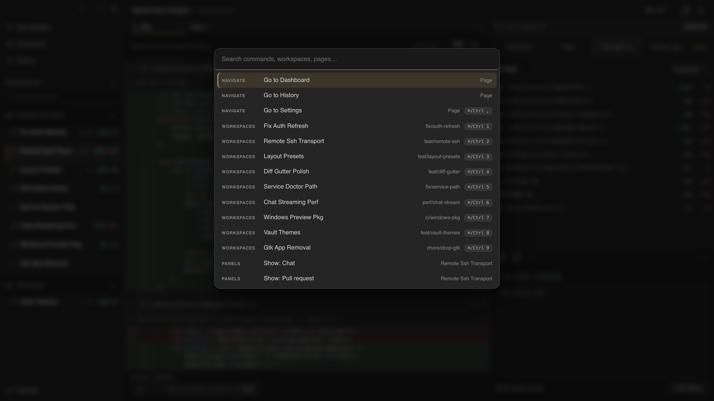

Context-switching is where time goes to die.
Archductor
a control plane for parallel coding agents
its own worktree
·
its own branch
·
its own agent
Codex and Claude Code run inside the workspace.

Review the diff. Open the PR. Archive the worktree.
Archductor
Local-first. Linux-first. SSH remote, no open port.
paru -S archductor